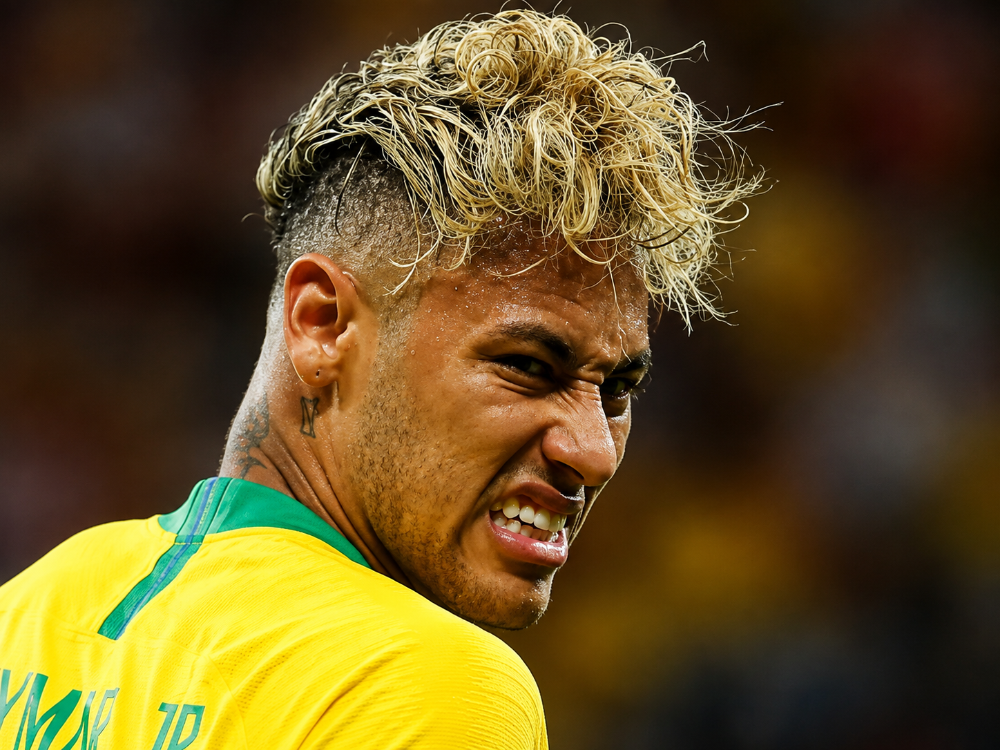
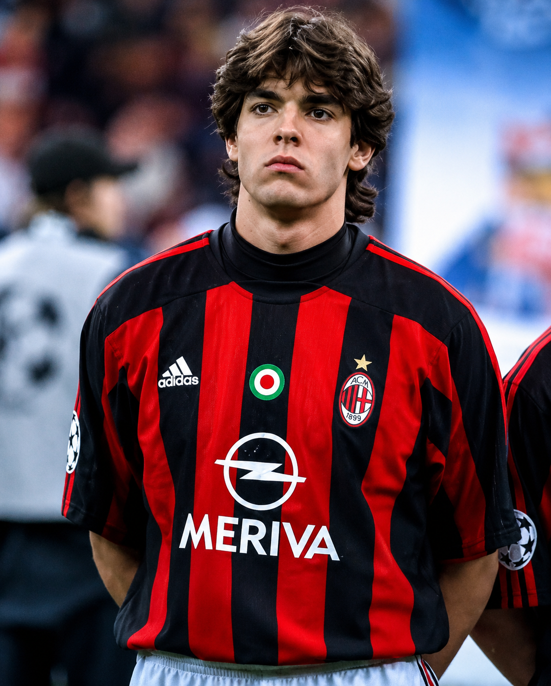

Neymar Jr
Neymar é um dos jogadores brasileiros mais talentosos e influentes de sua geração. Revelado pelo Santos, destacou-se desde cedo por sua técnica refinada, criatividade, dribles e capacidade de decidir partidas. Sua trajetória inclui grandes passagens pelo Barcelona e Paris Saint-Germain, além de uma importante carreira pela Seleção Brasileira. Em campo, tornou-se conhecido por transformar criatividade e habilidade individual em momentos decisivos.
Frase marcante: “Ousadia e alegria.”

Kaká
Kaká foi um dos grandes meio-campistas do futebol mundial durante os anos 2000. Combinando elegância, velocidade, inteligência e excelente capacidade de finalização, construiu uma carreira de destaque principalmente no Milan e no Real Madrid. Em 2007, conquistou a Bola de Ouro e foi eleito o melhor jogador do mundo. Pela Seleção Brasileira, também fez parte do elenco campeão da Copa do Mundo de 2002.
Frase marcante: “Não preciso ser o melhor, preciso dar o meu melhor.”
Ronaldo Fenômeno
Ronaldo Nazário, conhecido mundialmente como Ronaldo Fenômeno, foi um dos maiores atacantes da história do futebol. Reconhecido por sua velocidade, força, técnica, dribles e precisão nas finalizações, conquistou destaque por grandes clubes da Europa e pela Seleção Brasileira. Foi campeão da Copa do Mundo em 1994 e 2002, sendo protagonista na conquista de 2002, quando terminou a competição como artilheiro. Sua trajetória deixou uma marca inesquecível no futebol brasileiro e mundial.
Frase marcante: “O futebol é feito de momentos. Você precisa aproveitá-los.”